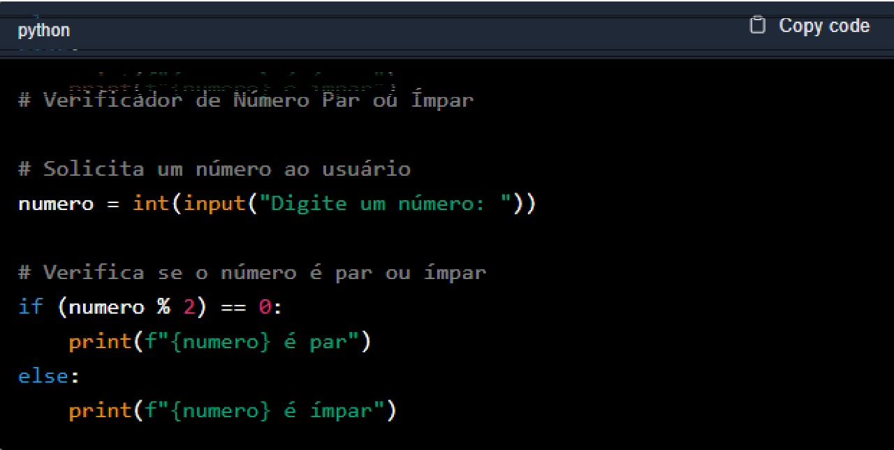
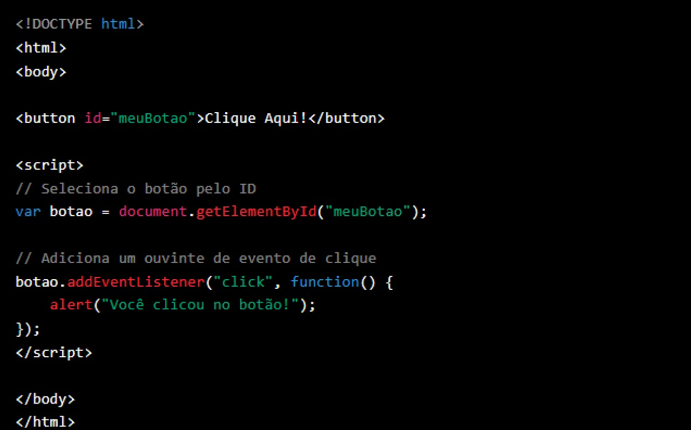

Prompt é uma instrução ou comando dado a um sistema, geralmente de inteligência artificial (IA), para gerar uma resposta ou realizar uma ação específica
Em ferramentas de IA, como o ChatGPT, um prompt pode ser uma pergunta, uma frase incompleta ou uma descrição detalhada do que você espera como resposta.
Interagir com uma IA pode ser extremamente útil, mas tudo depende de como formulamos as perguntas ou comandos, conhecidos como "prompts"
. Criar comandos , que também são chamados de “prompts eficientes é a chave para obter respostas precisas e relevantes. Abaixo, estão algumas dicas para melhorar seus prompts.
Dando os primeiros passos no mundo do desenvolvimento com Python pode parecer intimidador, mas é uma jornada repleta de possibilidades
Neste post, vamos explorar algumas dicas essenciais e tutoriais práticos para ajudar os desenvolvedores iniciantes a se familiarizarem com esta linguagem poderosa e versátil.
Segue algumas dicas:
Ambiente de Desenvolvimento
Configure seu ambiente de desenvolvimento com uma boa IDE (Integrated Development Environment) como PyCharm ou Visual Studio Code que oferecem recursos como autocompletar, debugging e integração com sistemas de controle de versão.
Compreenda a Sintaxe:
Dedique tempo para entender a sintaxe do Python. A clareza e a legibilidade são pontos fortes do Python, então familiarize-se com indentação, estruturas de controle e as diferenças entre strings, listas e dicionários.
Pratique com Exercícios
Sites como LeetCode, HackerRank e Codecademy oferecem exercícios de programação que são ótimos para praticar lógica e sintaxe. Use Bibliotecas: Python possui uma vasta biblioteca padrão e uma comunidade ativa que desenvolve muitas outras. Familiarize-se com elas para economizar tempo e esforço.
Construa Projetos Pequenos
Comece com projetos simples, como um jogo de adivinhação ou um conversor de temperatura, para aplicar o que aprendeu. Tutorial Prático: Vamos criar um pequeno script que solicita ao usuário que insira um número e informa se é par ou ímpar.
Este é um exemplo simples, mas que ilustra o uso de entrada de usuário, operadores e estruturas condicionais. Python é uma linguagem que oferece uma curva de aprendizado relativamente suave e uma comunidade de suporte robusta. Com dedicação e prática, você estará construindo aplicações complexas em pouco tempo. Lembre-se de que a prática constante é a chave para o sucesso
JavaScript é a linguagem que dá vida aos websites, permitindo interatividade e dinamismo. Se você está iniciando sua jornada como desenvolvedor web, este post é para você. Vamos explorar algumas dicas importantes e um tutorial básico para ajudá-lo a entender o básico do JavaScript.
Dicas:
Entenda o DOM:
O Document Object Model (DOM) é crucial para manipular elementos HTML e CSS com JavaScript. Aprenda como selecionar elementos e alterar seu conteúdo e estilo.
Variáveis e Tipos de Dados:
Familiarize-se com as diferentes variáveis e tipos de dados em JavaScript, incluindo strings, números, booleanos, arrays e objetos.
Funções
As funções são blocos reutilizáveis de código que você pode chamar sempre que precisar executar uma determinada tarefa. Aprenda a criar e chamar funções.
Eventos:
Entenda como os eventos funcionam e como você pode usar JavaScript para manipular interações do usuário, como cliques, mudanças de estado e muito mais.
Bibliotecas e Frameworks:
Explore bibliotecas e frameworks populares como jQuery, React e Angular para expandir suas capacidades de desenvolvimento.
Tutorial pratico
Vamos criar um pequeno script que adiciona um evento de clique a um botão e exibe um alerta quando o botão é clicado.
Este exemplo simples demonstra como adicionar interatividade a um elemento HTML usando JavaScript. JavaScript é uma linguagem essencial para qualquer desenvolvedor web. Com essas dicas e um entendimento básico dos conceitos, você estará pronto para criar experiências web ricas e interativas. Não tenha medo de experimentar e modificar códigos existentes para ver o que acontece – essa é uma ótima maneira de aprender. Boa sorte em sua jornada de aprendizado!